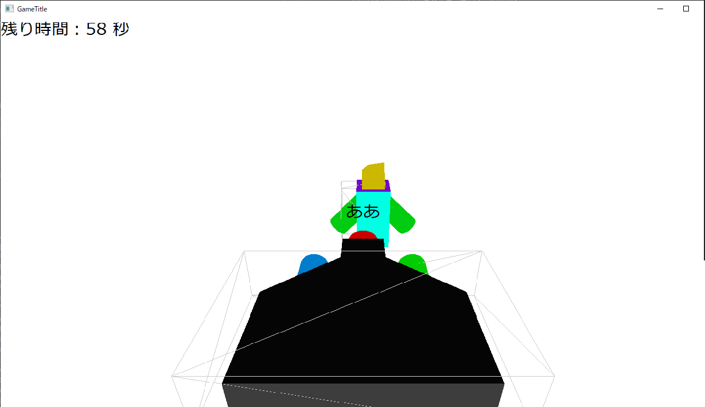

トップ
作品
フィルター
全て
Minecraftプラグイン
YMM4プラグイン
JavaFX
DxLib
DirectX
Android
WPF
Unity
Unreal
マニュアル系
WPF_Memo_Application
WPFによるメモ帳です。
Java_Discord_Bot
JDAによるDiscordBot。
Python_Discord_Bot
PythonによるDiscordBot。
Natural_Disaster_Plugin
Minecraftの自然災害プラグイン
Discord_Link
DiscordとMinecraftを連携するプラグイン
DirectX_3D_ShottingGame
DirectX11で作られた、3Dのシューティングゲーム。

Type_Game
DxLibで作られたタイピングゲーム。
TypeScript_DiscordBot
TypeScriptで作られたDiscordBot
Dxlib_Template
DxLibのテンプレート
C-Sharp_Discord_Bot
C#のDiscordBot
C-Sharp_TimerApp
WPFのタイマーアプリ。
CoreAttack_PVP
コアを破壊するゲーム
WPF_FileExplorer
WPFのファイルエクスプローラー
Android_Earthquake_App
Androidの地震情報アプリ
YMM4_Earthquake_Plugin
YMM4の地震情報アプリ
Python_Memo_App
Pythonのメモ帳
Minecraft_Car_Game
Minecraftのカーレースゲーム。
Guard_Villager
村人を守る銃撃ゲーム。
Earhquake_Java_Application
GeoToolsによる地震地図描画アプリ。
C-Sharp_DxLib_GameTemplate
C#のDxLibテンプレート
GIS_Viewer_CSharp
GISビュワー。
VorticeDirectX11_Template
Voriceによるゲームテンプレート。